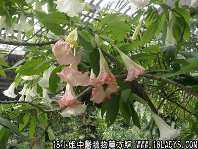

闹羊花(中药材植物名:曼陀罗)(植物科目:茄科)

古籍名：曼陀罗叶《本草纲目》。
别名：喇叭花。
植物名：曼陀罗。
生长环境：本品为直立、分枝、粗壮草本或亚灌木状。常见于村庄旁或路旁的旷地。
分布：原产印度。广东省常见于平原区交通较便利的大村庄。
入药部分：花。
采集期：夏、秋。
自采地点：家种及野生。
性味：性寒凉、味淡微甘、有大毒。
功能：麻醉、镇痛、平喘。
主治、用量和用法：哮喘：用干花约半朵去心，切碎，和烟丝卷烟吸。
附录：（叶）治石啃（胼胝）用生闹羊花叶适量，沙羌末、冰片少许，和匀，适当加水调敷患处。
禁忌：孕妇忌用。误服令人癫狂、昏迷。中闹羊花毒用甘草煎水服，或食片糖可解。入舌肿者，含醋治之。
参考资料：《广东省中医验方交流汇编》治轻重支气管炎、哮喘方：闹羊花2钱、麻黄1钱、沉香4分、牙硝少许，共研成细末，每于发病时用药粉，每次五厘，燃烟，吸入肺部，即能定喘。热症忌用。
新窖区中医公开蛇咬外敷方：闹羊花叶、五子金叶、七星剑叶、蟛蜞花叶、落地生根叶、白麻头，以上捶烂敷患处，倘好作痒，毒水流清即去闹羊花，加封口散敷之即愈。咬伤后，时留黄水，不能收口，用此方敷患处。
《湖北验方集锦第一集》灭臭虫方：闹羊花叶，平铺在有臭虫的床席下，上面垫上被褥，八日内臭虫可全部杀死。
《上海验方选编第一集》介绍治筋骨疼痛验方：闹羊花根1两、酒半斤，将闹羊花浸入酒中，约五、六天，去花，加樟脑4钱，瓶拧擦痈处。
《广州常用草药验方集解》荔湾区防疫站介绍灭孑孓经验方：闹羊花叶3市斤、清水7市斤，先将闹羊花叶切碎，捣烂，浸以清水，经12消失后即可使用，用上液300毫升有孑孓50条，经24小时后，孑孓全部死亡，同时蛹经孵化后的成蚊也因接触而死亡。经过二次试验，效果相同，证明闹羊花叶浸液灭孑孓有效。